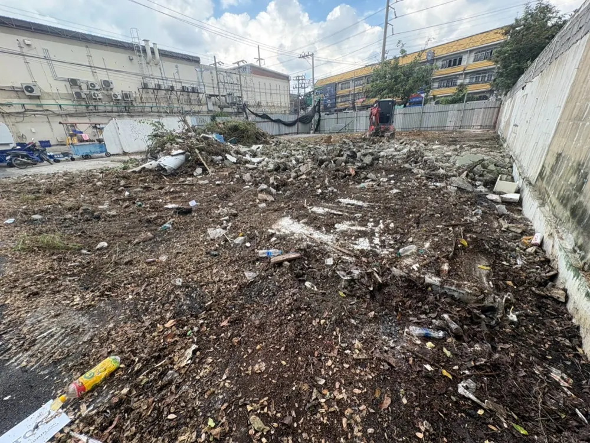
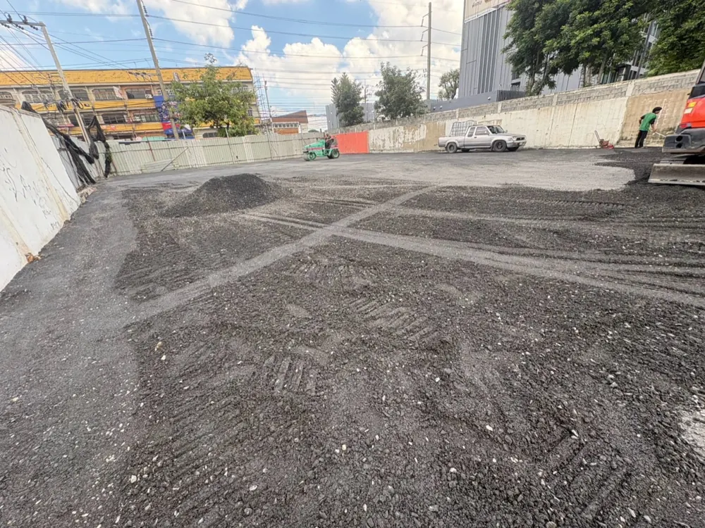
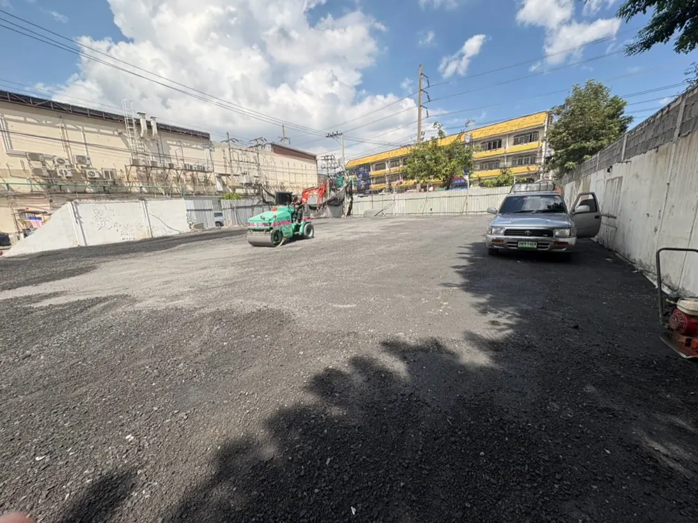
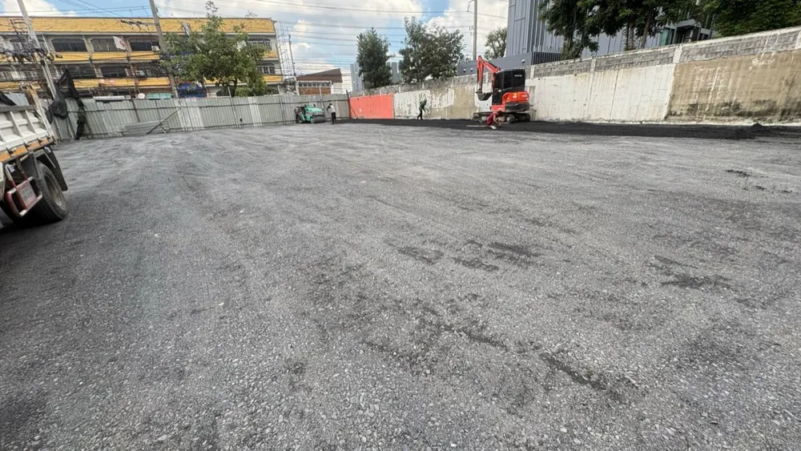

ลานจอดรถหินคลุกพร้อมบดอัด เริ่มจากการเตรียมพื้นเดิมให้เหมาะสม วางระดับและทางระบายน้ำ แล้วจึงลงวัสดุ เกลี่ย และบดอัดให้เป็นขั้นตอน บทความนี้พาดูสิ่งที่ควรคุยกับทีมงานก่อนทำลาน ผ่านภาพตั้งแต่พื้นที่เดิมจนถึงภาพรวมหลังทำงาน
เผยแพร่ · โดยทีม TRS ทำรงศักดิ์
ฐานพร้อม · ระดับดี · บดอัดเป็นขั้นตอน
วางแผนให้สัมพันธ์กับรถและลักษณะการใช้งานจริง
สำรวจและเคลียร์พื้นที่เดิม
ก่อนเริ่มทำลานจอดรถหินคลุก ควรดูว่าพื้นเดิมเป็นดิน พื้นถม หรือฐานเก่าที่ใช้งานมาแล้ว พร้อมตรวจขยะ เศษวัสดุ รากไม้ จุดทรุด และบริเวณที่เปียกแฉะ การนำวัสดุที่ไม่เหมาะสมออกและแก้จุดอ่อนก่อนลงหิน ช่วยให้วางแผนชั้นรองรับได้ตรงกับพื้นที่
- แจ้งประเภทรถ น้ำหนักบรรทุก และความถี่เข้าออก รวมถึงจุดจอดหรือจุดเลี้ยวประจำ
- ตรวจทางเข้าเครื่องจักร จุดพักวัสดุ และแผนจัดทางสัญจรระหว่างทำงาน
- หากพบพื้นอ่อนหรือมีการยวบ ควรประเมินวิธีปรับปรุงฐานก่อนเพิ่มวัสดุทับลงไป

พื้นที่เดิมกำหนดระดับพื้นและทางระบายน้ำ
ระดับลานควรสัมพันธ์กับประตู อาคาร ฝาท่อ และพื้นที่ข้างเคียง โดยกำหนดทิศทางน้ำไปยังจุดระบายที่ใช้งานได้จริง ไม่ปล่อยให้น้ำรวมตัวเป็นแอ่งหรือไหลไปสร้างปัญหานอกพื้นที่
แม้เป็นลานหินคลุกก็ยังต้องวางแผนเรื่องน้ำ ไม่ควรคาดว่าน้ำจะซึมผ่านพื้นได้เพียงอย่างเดียว โดยเฉพาะพื้นที่ดินแน่นหรือบริเวณที่มีน้ำจากข้างเคียงไหลเข้ามา ควรตรวจทางน้ำก่อนเริ่มและดูแลให้เปิดโล่งหลังใช้งาน
เลือกวัสดุและความหนาหลังบดอัด
หินคลุกสำหรับงานลานควรมีขนาดคละและคุณสมบัติเหมาะกับการใช้งาน ส่วนความหนาต้องดูร่วมกับดินเดิม ฐานรองรับ น้ำหนักรถ และจำนวนเที่ยวรถ ไม่ควรใช้ความหนาเดียวกับทุกพื้นที่ หรือพิจารณาจากภาพผิวหน้าเพียงอย่างเดียว
ก่อนตกลงงาน ควรระบุให้ชัด
- ชั้นวัสดุที่ทำ: แยกงานปรับปรุงดิน งานถม และชั้นหินคลุกให้เข้าใจตรงกัน
- ความหนาหลังบดอัด: ระบุว่าเป็นความหนาหลังบดอัด ไม่ใช่ความหนาวัสดุที่เทหรือเกลี่ยไว้ก่อนบด
- รถที่ใช้งานจริง: พื้นที่รถเก๋ง รถกระบะ และรถบรรทุกมีเงื่อนไขต่างกัน หากมีรถหนักควรประเมินโครงสร้างเพิ่มเติม
- วิธีตรวจรับ: ตกลงตำแหน่งและวิธีตรวจความหนา ระดับ และความแน่นให้เหมาะกับขอบเขตงาน

กระจายวัสดุเกลี่ยและบดอัดเป็นขั้นตอน
เมื่อฐานพร้อม จึงกระจายวัสดุและเกลี่ยให้สม่ำเสมอตามระดับที่วางไว้ พร้อมควบคุมความชื้นให้เหมาะกับการบดอัด วัสดุที่แห้งจัดหรือเปียกแฉะอาจทำให้ควบคุมงานได้ยาก ทีมงานจึงควรตรวจความพร้อมระหว่างทำงาน
หากต้องลงวัสดุหนา ควรวางแผนแบ่งชั้นและเลือกเครื่องจักรให้เหมาะกับวัสดุและพื้นที่ เพื่อให้บดอัดได้ทั่วถึง รวมทั้งเก็บขอบลาน มุมอาคาร และจุดที่รถบดเข้าถึงยากด้วยวิธีที่เหมาะสม

ระหว่างบดอัด
เก็บรายละเอียดตรวจงานก่อนเปิดใช้ลานจอดรถ
ควรเดินตรวจพื้นที่ร่วมกับทีมงาน โดยดูทั้งผิวหน้า ระดับ ขอบลาน และจุดเชื่อมต่อ หากพบร่องล้อ จุดยวบ หรือวัสดุกระจุกตัว ควรประเมินสาเหตุและเก็บรายละเอียดก่อนเปิดใช้ตามแผน
- ระดับลานและทางเข้าออกสัมพันธ์กับแผนที่ตกลงไว้
- ทางน้ำและจุดรับน้ำไม่ถูกวัสดุหรือสิ่งกีดขวางปิดทับ
- ขอบลานและจุดเครื่องจักรเข้าถึงยากได้รับการเก็บรายละเอียด
- ตรวจความหนาและความแน่นตามวิธีและเกณฑ์ที่ตกลงไว้
- ได้รับคำแนะนำเวลาเปิดใช้และการดูแลจากทีมหน้างาน
ดูแลลานหินคลุกหลังเริ่มใช้งาน
ลานหินคลุกอาจมีฝุ่น วัสดุเคลื่อนตัว หรือเกิดร่องตามสภาพอากาศและการใช้งาน ควรตรวจหลังฝนตกและบริเวณที่รถเลี้ยวซ้ำ ดูแลทางระบายน้ำ และซ่อมปรับระดับเมื่อเริ่มพบความเสียหาย
- ตรวจน้ำขังและร่องน้ำ หากเกิดซ้ำควรหาสาเหตุเรื่องระดับและทางระบาย
- เมื่อพบจุดทรุด ควรประเมินชั้นรองรับก่อนเติมวัสดุทับผิว
- หากเปลี่ยนมาใช้รถหนักหรือรถเข้าออกถี่ขึ้น ควรให้ทีมงานประเมินความเหมาะสมอีกครั้ง
- หากต้องการลดฝุ่นหรือปรับเป็นผิวทางชนิดอื่น ควรตรวจฐานและวางแผนขั้นต่อไปก่อนดำเนินงาน
คำถามที่พบบ่อยเรื่องลานจอดรถหินคลุก
เทหินคลุกอย่างเดียวได้ไหม?
ควรพิจารณาการเตรียมพื้น เกลี่ยระดับ และบดอัดร่วมกัน การเทวัสดุอย่างเดียวอาจไม่ตรงกับสภาพใช้งานที่ต้องการ โดยเฉพาะพื้นที่มีฐานอ่อนหรือมีน้ำขังอยู่เดิม
ควรลงหินคลุกหนาเท่าไร?
ต้องดูดินเดิม ฐานรองรับ รถที่ใช้งาน และการระบายน้ำร่วมกัน ควรสำรวจพื้นที่ก่อนสรุป และระบุความหนาหลังบดอัดพร้อมวิธีตรวจรับให้ชัดเจน
ลานหินคลุกรับรถบรรทุกได้หรือไม่?
ต้องประเมินโครงสร้างชั้นทาง น้ำหนักบรรทุกจริง และความถี่ใช้งานก่อน ไม่สามารถยืนยันจากชนิดผิวหน้าหรือรูปถ่ายเพียงอย่างเดียว จุดจอดและจุดเลี้ยวรถหนักควรพิจารณาเป็นพิเศษ
ทำแล้วจะมีฝุ่นหรือน้ำขังไหม?
ยังเกิดได้ตามวัสดุ สภาพอากาศ ระดับพื้น และการดูแล จึงควรวางแผนเรื่องทางน้ำและการบำรุงรักษาตั้งแต่ก่อนทำงาน หากต้องการผิวที่ตอบโจทย์ต่างออกไป ให้คุยทางเลือกกับทีมงาน
ต้องเตรียมอะไรเพื่อขอประเมินงาน?
ส่งรูปพื้นที่ ขนาดโดยประมาณ พิกัด ประเภทรถ น้ำหนักบรรทุก และปัญหาที่พบ เช่น พื้นทรุดหรือน้ำขัง ให้ช่างหมู ทีม TRS พูดคุยแนวทางเบื้องต้นและนัดสำรวจตามความเหมาะสม
ความรู้จากงานปรับพื้นที่และลานจอดรถ เพื่อช่วยคุยรายละเอียดหน้างานให้ชัดเจนขึ้น
บทความเป็นแนวทางทั่วไป รายละเอียดชั้นทาง วัสดุ และวิธีทำงานควรประเมินจากพื้นที่จริง ภาพหน้างานใช้ประกอบลำดับการทำงาน